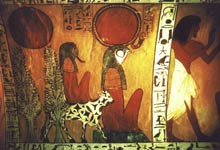

Ра або Ре, в єгипетській міфології бог сонця, втілений в образі сокола, величезного кота або людини з соколиного головою, увінчаною сонячним диском. Ра, бог сонця, був батьком Уаджит, кобри Півночі, захищає фараона від палючих променів сонця. Згідно з міфом, вдень благочинний Ра, висвітлюючи землю, пливе по небесному Нілу в барці Манджет, ввечері пересідає в барку Месектет і в ній продовжує шлях по підземному Нілу, а вранці, здолавши в щоночі битві змія Апопа, знову з'являється на горизонті.
Ра шанувався як цар і батько богів. Ототожнювався з богом Амоном. Зображувався в образі фараона. Ряд міфів про Ра пов'язаний з уявленнями єгиптян про зміну пір року.
Весняний розквіт природи сповіщав повернення богині вологи Тефнут, вогненним Оком сяючою на лобі Ра, і її вступ у шлюб з Шу. Літня спека пояснювався гнівом Ра на людей. Згідно з міфом, коли бог Ра постарів, а люди перестали його почитати і навіть "замислили проти нього злі справи", Ра негайно зібрав раду богів на чолі з Нуном (або Атумом), на якому було вирішено покарати рід людський.
Богиня Сехмет (Хатхор) в образі левиці вбивала і пожирала людей до тих пір, поки її хитрістю не вдалося напоїти червоним, як кров, ячмінним пивом. Випивши, богиня заснула і забула про помсту, а Ра, проголосивши своїм намісником на землі Геба, піднявся на спину небесної корови і звідти продовжував правити світом. Стародавні греки ототожнювали Ра з Геліосом.